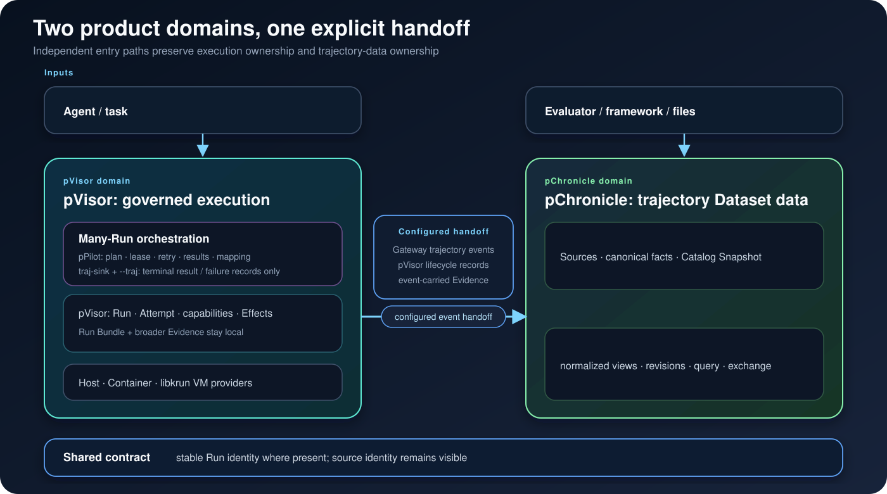

Persisting 概览¶
Persisting 提供两条互联的入口路径：使用 pVisor 治理 Agent 执行，或使用 pChronicle 构建持久轨迹 Dataset。两条路径都可以独立工作，并在同时使用两个产品时通过稳定契约 连接。
两个产品域¶
- pVisor 虚拟化并治理 Agent 执行。pPilot 把同一套 Run contract 扩展到多个 相互独立的 Run。
- pChronicle 把原生与外部轨迹 Source 转化为持久、可查询的 Dataset，并保留 origin、规范化视图与 lineage。
存在 Run identity 时，它会跨产品边界保持稳定。当前已实现的配置后交接只发布 Gateway 轨迹 event 与 pVisor lifecycle record，以及这些 record 携带的 Evidence。Run Bundle 及其中的 Artifact reference、lineage、staged Effect 和更完整的运行时 Evidence 仍保留在本地，除非 另行搬运。二者都不是某条强制端到端生命周期中的一个步骤。

治理 Agent 执行¶
Agent 需要的不只是进程。它还需要工作区、工具、网络、凭据、状态，以及约束外部修改的
边界。pvisor 为一个 Run 创建这条边界，同时仍可复用底层 host、Container、VM 或
集群资源。
该命令使用 staged workspace，并记录实际安装的控制机制。Run identity 不依赖进程 ID 或 execution provider。Run 结束后，先检查结果，再只接受应该进入基础工作区的部分：
pvisor review last
pvisor apply last --path src
pvisor apply last --include 'tests/**'
pvisor apply last --all
apply 可以执行多次：每次成功调用只消费选中的、依赖闭合的变更批次，未选中的修改
继续留在 stage 中。Gateway、OverlayFS、OverlayNet 与 Control 是 pVisor runtime
driver。pVisor 无需在运行时依赖 pChronicle，也能生成有用的 Run Bundle。
构建轨迹 Dataset¶
pChronicle 发现原生与外部轨迹 Source，保留它们的 origin，记录 Catalog Snapshot，
提供规范化查询与交换视图，并保留 revision lineage。外部 Source 无需先经过 pVisor，
即可直接进入 pChronicle。
Onboarding 流程会创建临时示例 Dataset，无需源码 checkout。Dataset 是发现、检查、交换 与分析的持久单元。pChronicle 不负责启动、调度或控制 Agent Run。
使用集成路径¶
需要治理多个 Run 时，pPilot 在不改变 Run contract 的前提下规划任务、限制并发、
执行 lease fencing、记录持久结果，并对已支持的崩溃窗口执行 reconcile：
pPilot 默认路径终止于持久结果、task-to-Run mapping、coordination 与 lease 历史，以及
配置的结果 journal。启用 traj-sink feature 并传入 --traj 时，pPilot 只额外发出终态
ppilot.result 或 ppilot.failure record；该选项不会捕获通用 pVisor 轨迹。
pVisor 自身配置后的 Gateway/lifecycle capture 是另一条独立集成。当前通过 --run-spec
启动的 delegated pVisor Run 不会继承 Chronicle capture 配置，完整 Run Bundle 仍保留在本地。
保证取决于来源¶
pVisor 记录每个 Run 实际具备的控制机制与 Provider 特定 Evidence；文件隔离不代表网络 隔离，也不代表远程 Effect 受到控制。pChronicle 保留每个 Source 提供的 identity 与 lineage，但导入轨迹无法事后添加 Source 原本没有携带的执行控制或 Evidence。